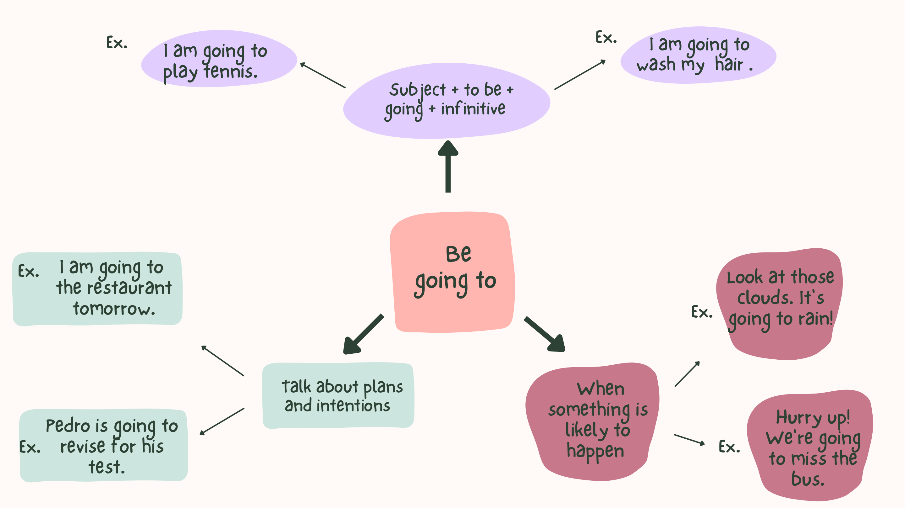

Be going to
Learn the structure and uses of be going to, then check that you can use it confidently.
I LEARN
Your lesson
Read the lesson below before you start the quizzes.

LET'S PRACTISE
Complete the three quizzes. You can try them again as many times as you like.